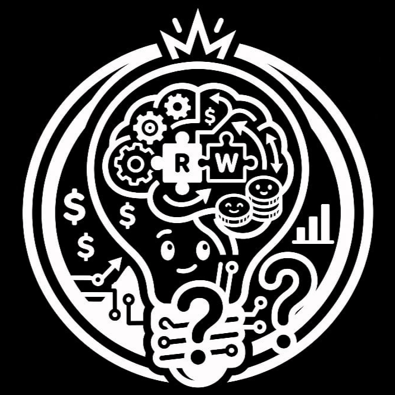
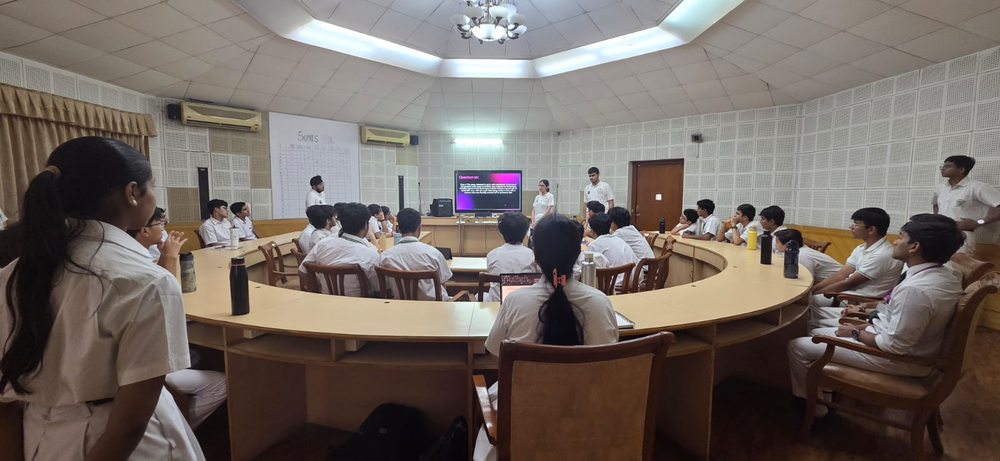
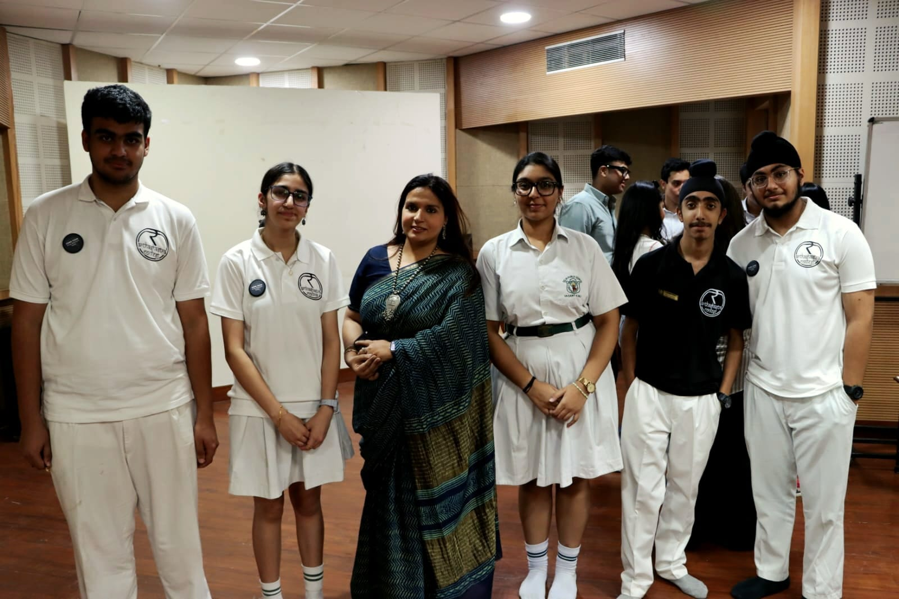
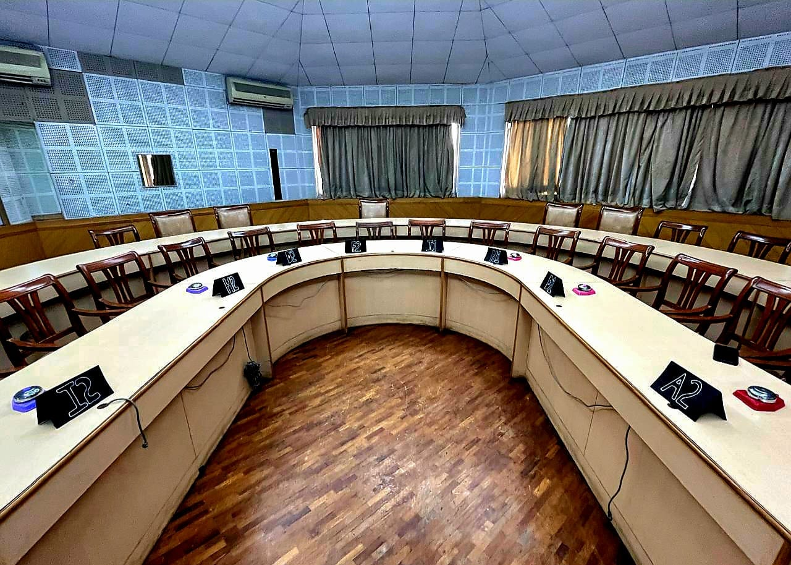
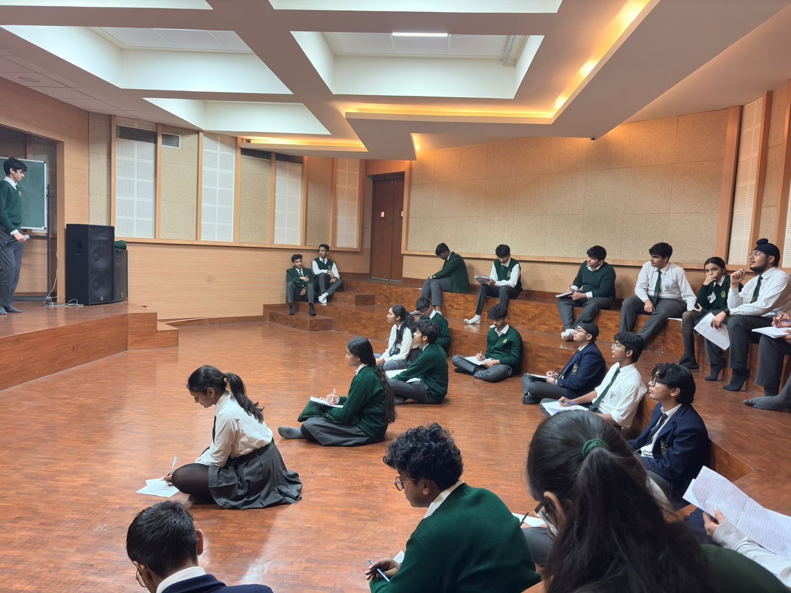
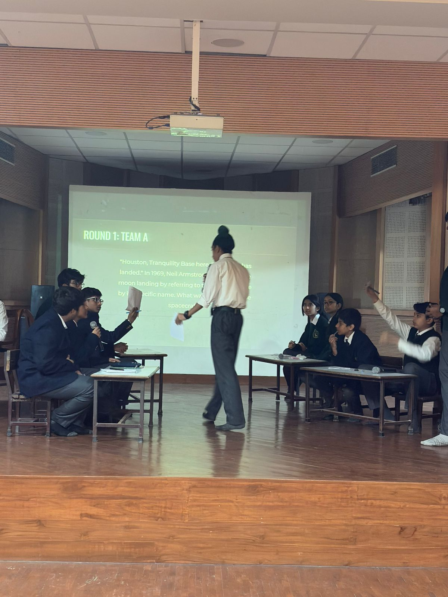

The competitive frameworks and tournaments hosted by the society.
The primary induction tournament for the 2026 cohort. An omnidisciplinary assessment designed to identify raw analytical potential and situational deduction.

ORGANISED: 22 MAY 2026



The digital vanguard. Operating as the online preliminary round, this stage acted as the initial filtration barrier, testing raw speed and foundational lateral thinking across a massive participant pool.
The offline semi-finals. 16 qualifying teams were divided into two highly volatile brackets of 8. Teams were required to piece together fragmented clues under live stage pressure to secure a finals berth.
The grand finale. The definitive top 6 teams faced off in a brutal, uncompromising final stage designed to push deductive reasoning and risk management to their absolute limits.
The definitive proving ground for the society's current active roster. Stripped of a predictable syllabus, the 2025 Senior Intra was strictly engineered to assess raw cognitive endurance and lateral deduction across a rigorous three-stage architecture.
The operation initiated with a high-speed online preliminary round to establish a cognitive baseline, effectively filtering the massive participant pool. Qualifying candidates then advanced to a comprehensive written semi-final, demanding deep structural deduction. Finally, the surviving quizzers clashed in the live stage finals, where pressure management and rapid recall ultimately forged our new senior inductees.

